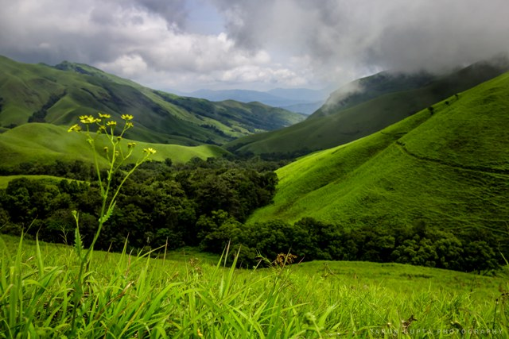

TourKarnataka.com
TOURIST PLACES IN DAKSHINA KANNADA
DHARMASTHALA
The Dharmasthala Temple is a beautiful, historic temple that is 8 centuries old. It is dedicated to the Hindu God, Lord Shiva and is situated in the famous Dakshin Kannada district of the temple town of Dharmasthala.
The Dharmasthala Manjunatha Temple although dedicated to Lord Shiva, is very unique in nature.
besides the primary deity, there are other idols like Dharma Daivas and Shakti or Ammanavaru as well as the four Guardian Spirits of Lord Dharma such as Kalarkayi, Kanyakumari, Kalarahu and Kumaraswamy.
There is an interesting story associated with the temple. The area was ideally in a village called Kuduma in Belthangady. The famous Jain Bunt chief – Birmanna Pergade, used to reside in his house Nelliadi Beedu along with his wife, Ammu Ballalthi.
As legend has it, one fine day, the four guardian angels of Lord Dharma masked themselves as human beings and entered the house. They were on a quest of Dharma preaching and propagation and received a very warm welcome in return. They even requested the chieftain to vacate the house, which the former accepted.
Finally, they ended up making separate shrines for the 4 Daivas as well.
KUKKE SUBRAHMANAYA TEMPLE
Kukke Subramanya (Tulu and Kannada: Kukke Subrahmaṇya) is a Hindu temple located in the village Subramanya, of Kadaba taluk in Dakshina Kannada district Karnataka. In this temple Kartikeya is worshipped as Subramanya,lord of all serpents.
The epics relate that the divine serpent Vasuki and other serpents found refuge under Subramanya when threatened by the Garuda.
Pilgrims going to the temple have to cross the Kumaradhara River and take a holy dip in the river before entering the temple for their darshan holy viewing of the Lord.
The Kukke Subramanya Temple is located in the Western Ghats range of Karnataka. Overlooking the temple is the famous mountain of Kumara Parvatha, a popular hiking destination for trekkers from across South India.
KUDREMUKH

Kudremukh is a mountain range and name of a peak located in Chikkamagaluru district, in Karnataka, India. It is also the name of a small hill station cum mining town situated near the mountain, about 20 kilometres from Kalasa
The highest point in the National Park is the Kudremukh peak which is around 1892 meters high. The opulence of the soils is perfect for the growth of lush greenery, hence most of the park is filled with evergreen forests and green grasses. Many flowering plants like the Orchids are found here.
The hill station is also popular pilgrim center, with many sacred ponds located in the nearby areas, which makes it a popular pilgrim location in Chikkamangaluru. Naga theertha, Amba theertha, Varaha theertha, Vashishta theertha and Rudra theertha are some of the attractions for pilgrims.
Major rivers that originate from these spectacular mountain regions of Kudremukh include Netravathi and Tunga Bhadra.
TALAKAVERI
There is a religious significance attached to the temple. It is said that if you take a dip in the holy river you will be healed of various physical and psychological miseries. The water here is supposed to have healing and miraculous powers.
It is said that the Coorgies used the holy water and prayed to Goddess Cauveramma Devi Thayi.
Talacauvery is about eight kilometres from Bhagamandala. There are many small temples here and many devotees visit this beautiful temple every year. The temple was constructed for Lord Agastheeswara.
Talakaveri is marked with Brahma Kundike or Tirth Kundike. A small spring of water originates from this place and hence it is referred to as Talakaveri.
The Tulasankaramma is celebrated in Talakaveri with great pomp and splendour. There is a water gush at the Brahma Kundike during this period and devotees come here in huge numbers to worship at the temple. The locals believe that this is a very auspicious occasion.
TANNIRBHAVI BEACH
This is the perfect place for the peace and nature lover. Well, Tannirbhavi is the quietest and offbeat location that people generally fail to visit. The place has all remained desolate and has always been kept apart from other places, just because of the isolated region.
Well, it’s pretty safe here. If you are looking to experience a peace of mind, with the utmost serenity, then this is the righteous place that you must never afford to miss.
The beach offers you an unruffled state, just enjoying the sunset in the evening. The only route to visit the beach is by road; it is quite close to Gurupura River or from the Sultan Battery.
The beach only lately gained a lot of popularity with the installation of modern facilities like proper washrooms, parking spaces, lifeguards and several eatery stalls. A couple of concrete benches and sheds have also been installed and tall light masts are placed, for the safety and convenience of the tourists.
MALLALLI FALLS
The Mallalli Falls is located in the Western Ghats at the foot of the Pushpagiri range. This falls about 25km from Somwarpet in the Kodagu district of Karnataka.
Mallali Falls are fed by the Kumaradhara River
The hills around the Mallalli Falls are very popular with trekkers.
The hillside paths are quite narrow and are flanked by beautiful hillsides which adds to the beauty of this trek. However, if you are planning to trek down this route, wear long trousers with a cuffed hem and sneakers as there are many leeches in the area.
The best time to plan a visit to the Mallalli Falls is post monsoon between the months of July and December. At this point of time, the water levels are at their highest and gush down the hillside in full force. The landscape is also a lush green at this time and adds to the natural beauty of the area.